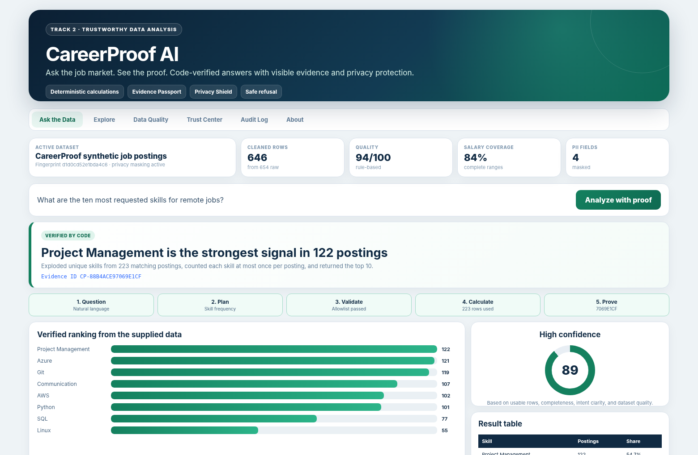

Ask the job market. See the proof.
This dataset is synthetic and was generated for demonstration and evaluation. It does not represent current real-world hiring conditions.
It can produce a confident, plausible answer without calculating from the supplied dataset.
Students, recent graduates, career counselors, and workforce-development teams.

raw synthetic postings
cleaned postings
quality score
judge-ready questions
No arbitrary Python, SQL, eval, or exec.
Unavailable or unsafe questions stop before calculation.
Rows, completeness, intent clarity, and quality.
223 remote postings matched. Each skill was counted at most once per posting.
Evidence ID: CP-88B4ACE97069E1CF
Recompute the ID, then replay the validated plan when the active dataset matches.
Suggest the closest questions that the data can answer.
Transparent skill overlap without a fake hiring score.
Compare roles, states, levels, or work modes.
Every removed, normalized, or excluded record is disclosed.
Mask contacts before display, export, report, and log.
The dataset cannot support that conclusion. It has no employee-satisfaction field.